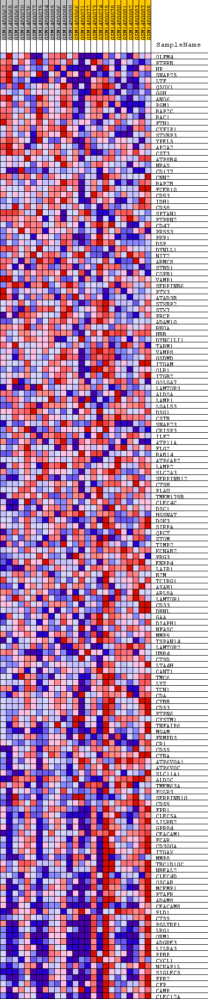
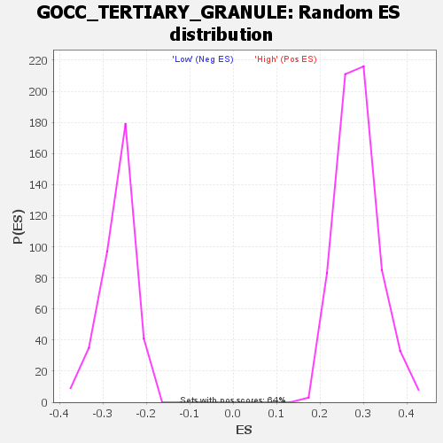

Profile of the Running ES Score & Positions of GeneSet Members on the Rank Ordered List
| Dataset | WG6v3.MRPL3.cls#High_versus_Low.MRPL3.cls#High_versus_Low_repos |
| Phenotype | MRPL3.cls#High_versus_Low_repos |
| Upregulated in class | Low |
| GeneSet | GOCC_TERTIARY_GRANULE |
| Enrichment Score (ES) | -0.5396721 |
| Normalized Enrichment Score (NES) | -2.0323272 |
| Nominal p-value | 0.0 |
| FDR q-value | 0.00877986 |
| FWER p-Value | 0.034 |
| SYMBOL | TITLE | RANK IN GENE LIST | RANK METRIC SCORE | RUNNING ES | CORE ENRICHMENT | |
|---|---|---|---|---|---|---|
| 1 | OLFM4 | OLFM4 | 46 | 0.338 | 0.0318 | No |
| 2 | PTPRB | PTPRB | 439 | 0.163 | 0.0279 | No |
| 3 | HP | HP | 754 | 0.124 | 0.0241 | No |
| 4 | SNAP25 | SNAP25 | 851 | 0.115 | 0.0308 | No |
| 5 | LTF | LTF | 948 | 0.108 | 0.0367 | No |
| 6 | QSOX1 | QSOX1 | 1294 | 0.087 | 0.0276 | No |
| 7 | GGH | GGH | 1485 | 0.079 | 0.0257 | No |
| 8 | ANO6 | ANO6 | 1506 | 0.079 | 0.0326 | No |
| 9 | PGM1 | PGM1 | 1710 | 0.070 | 0.0292 | No |
| 10 | RAP2C | RAP2C | 1730 | 0.070 | 0.0352 | No |
| 11 | RAC1 | RAC1 | 1763 | 0.069 | 0.0405 | No |
| 12 | FTH1 | FTH1 | 1990 | 0.062 | 0.0350 | No |
| 13 | CYFIP1 | CYFIP1 | 2195 | 0.057 | 0.0302 | No |
| 14 | STXBP3 | STXBP3 | 2411 | 0.052 | 0.0243 | No |
| 15 | YPEL5 | YPEL5 | 2471 | 0.051 | 0.0263 | No |
| 16 | AP2A2 | AP2A2 | 2853 | 0.044 | 0.0109 | No |
| 17 | CST3 | CST3 | 2904 | 0.043 | 0.0127 | No |
| 18 | ATP8B4 | ATP8B4 | 2914 | 0.043 | 0.0165 | No |
| 19 | NRAS | NRAS | 2936 | 0.042 | 0.0196 | No |
| 20 | CD177 | CD177 | 2959 | 0.042 | 0.0227 | No |
| 21 | CNN2 | CNN2 | 3036 | 0.040 | 0.0229 | No |
| 22 | RAP2B | RAP2B | 3328 | 0.037 | 0.0115 | No |
| 23 | FCER1G | FCER1G | 3509 | 0.035 | 0.0056 | No |
| 24 | CD93 | CD93 | 3529 | 0.034 | 0.0081 | No |
| 25 | IDH1 | IDH1 | 3560 | 0.034 | 0.0100 | No |
| 26 | CD58 | CD58 | 3631 | 0.033 | 0.0097 | No |
| 27 | SPTAN1 | SPTAN1 | 3671 | 0.033 | 0.0110 | No |
| 28 | PTPRN2 | PTPRN2 | 3955 | 0.029 | -0.0007 | No |
| 29 | CD47 | CD47 | 3983 | 0.029 | 0.0008 | No |
| 30 | PRSS3 | PRSS3 | 4008 | 0.029 | 0.0025 | No |
| 31 | PKP1 | PKP1 | 4168 | 0.027 | -0.0030 | No |
| 32 | DSP | DSP | 4278 | 0.026 | -0.0060 | No |
| 33 | DYNLL1 | DYNLL1 | 4390 | 0.025 | -0.0092 | No |
| 34 | NIT2 | NIT2 | 4394 | 0.025 | -0.0069 | No |
| 35 | ARMC8 | ARMC8 | 4412 | 0.025 | -0.0052 | No |
| 36 | STBD1 | STBD1 | 4465 | 0.024 | -0.0055 | No |
| 37 | COPB1 | COPB1 | 4999 | 0.020 | -0.0312 | No |
| 38 | VAMP1 | VAMP1 | 5100 | 0.019 | -0.0344 | No |
| 39 | SERPINB6 | SERPINB6 | 5193 | 0.018 | -0.0374 | No |
| 40 | PTX3 | PTX3 | 5194 | 0.018 | -0.0355 | No |
| 41 | ATAD3B | ATAD3B | 5205 | 0.018 | -0.0342 | No |
| 42 | STXBP2 | STXBP2 | 5278 | 0.018 | -0.0362 | No |
| 43 | STX7 | STX7 | 5318 | 0.017 | -0.0364 | No |
| 44 | PRCP | PRCP | 5322 | 0.017 | -0.0348 | No |
| 45 | ADAM10 | ADAM10 | 5464 | 0.016 | -0.0405 | No |
| 46 | RHOA | RHOA | 5760 | 0.015 | -0.0543 | No |
| 47 | HBB | HBB | 5819 | 0.014 | -0.0559 | No |
| 48 | DYNC1LI1 | DYNC1LI1 | 5960 | 0.013 | -0.0618 | No |
| 49 | TARM1 | TARM1 | 5994 | 0.013 | -0.0622 | No |
| 50 | VAMP8 | VAMP8 | 6089 | 0.013 | -0.0658 | No |
| 51 | GSDMD | GSDMD | 6226 | 0.012 | -0.0716 | No |
| 52 | ITGAM | ITGAM | 6312 | 0.012 | -0.0749 | No |
| 53 | OLR1 | OLR1 | 6796 | 0.009 | -0.0990 | No |
| 54 | ITGB2 | ITGB2 | 6874 | 0.009 | -0.1021 | No |
| 55 | GOLGA7 | GOLGA7 | 7369 | 0.007 | -0.1271 | No |
| 56 | LAMTOR3 | LAMTOR3 | 7904 | 0.005 | -0.1544 | No |
| 57 | ALDOA | ALDOA | 7932 | 0.005 | -0.1553 | No |
| 58 | LAMP1 | LAMP1 | 7935 | 0.004 | -0.1550 | No |
| 59 | LGALS3 | LGALS3 | 7966 | 0.004 | -0.1561 | No |
| 60 | DSG1 | DSG1 | 7969 | 0.004 | -0.1557 | No |
| 61 | CSTB | CSTB | 8019 | 0.004 | -0.1579 | No |
| 62 | SNAP23 | SNAP23 | 8258 | 0.003 | -0.1699 | No |
| 63 | CRISP3 | CRISP3 | 8274 | 0.003 | -0.1703 | No |
| 64 | ILF2 | ILF2 | 8487 | 0.002 | -0.1811 | No |
| 65 | ATP11A | ATP11A | 8515 | 0.002 | -0.1823 | No |
| 66 | FLG2 | FLG2 | 8916 | 0.001 | -0.2029 | No |
| 67 | RAB14 | RAB14 | 8971 | 0.001 | -0.2057 | No |
| 68 | ATP6AP2 | ATP6AP2 | 9386 | -0.001 | -0.2271 | No |
| 69 | LAMP2 | LAMP2 | 9943 | -0.003 | -0.2557 | No |
| 70 | SLC2A3 | SLC2A3 | 10865 | -0.006 | -0.3029 | No |
| 71 | SERPINB12 | SERPINB12 | 11128 | -0.007 | -0.3158 | No |
| 72 | CTSH | CTSH | 11392 | -0.008 | -0.3286 | No |
| 73 | PLAU | PLAU | 11541 | -0.009 | -0.3354 | No |
| 74 | TMEM179B | TMEM179B | 11794 | -0.010 | -0.3476 | No |
| 75 | CLEC4C | CLEC4C | 12029 | -0.011 | -0.3586 | No |
| 76 | DSC1 | DSC1 | 12294 | -0.012 | -0.3712 | No |
| 77 | HGSNAT | HGSNAT | 12352 | -0.012 | -0.3729 | No |
| 78 | DOK3 | DOK3 | 12439 | -0.013 | -0.3761 | No |
| 79 | SIRPA | SIRPA | 12505 | -0.013 | -0.3781 | No |
| 80 | QPCT | QPCT | 12557 | -0.013 | -0.3795 | No |
| 81 | STOM | STOM | 12969 | -0.016 | -0.3992 | No |
| 82 | TIMP2 | TIMP2 | 13057 | -0.016 | -0.4021 | No |
| 83 | KCNAB2 | KCNAB2 | 13114 | -0.016 | -0.4034 | No |
| 84 | PRG3 | PRG3 | 13148 | -0.016 | -0.4035 | No |
| 85 | ENPP4 | ENPP4 | 13314 | -0.018 | -0.4103 | No |
| 86 | LAIR1 | LAIR1 | 13421 | -0.018 | -0.4139 | No |
| 87 | B2M | B2M | 13469 | -0.018 | -0.4145 | No |
| 88 | TCIRG1 | TCIRG1 | 13490 | -0.019 | -0.4136 | No |
| 89 | ASAH1 | ASAH1 | 13802 | -0.021 | -0.4277 | No |
| 90 | ARL8A | ARL8A | 13822 | -0.021 | -0.4266 | No |
| 91 | LAMTOR1 | LAMTOR1 | 14071 | -0.023 | -0.4372 | No |
| 92 | CD33 | CD33 | 14309 | -0.024 | -0.4470 | No |
| 93 | DBNL | DBNL | 14628 | -0.027 | -0.4608 | No |
| 94 | GAA | GAA | 14747 | -0.028 | -0.4641 | No |
| 95 | DIAPH1 | DIAPH1 | 14967 | -0.030 | -0.4724 | No |
| 96 | NFASC | NFASC | 15319 | -0.033 | -0.4873 | No |
| 97 | MMP9 | MMP9 | 15547 | -0.036 | -0.4955 | No |
| 98 | TSPAN14 | TSPAN14 | 15678 | -0.037 | -0.4985 | No |
| 99 | LAMTOR2 | LAMTOR2 | 15769 | -0.038 | -0.4993 | No |
| 100 | UBR4 | UBR4 | 15770 | -0.038 | -0.4955 | No |
| 101 | CTSD | CTSD | 15989 | -0.041 | -0.5027 | No |
| 102 | LTA4H | LTA4H | 16053 | -0.041 | -0.5018 | No |
| 103 | CANT1 | CANT1 | 16254 | -0.044 | -0.5077 | No |
| 104 | TMC6 | TMC6 | 16871 | -0.053 | -0.5343 | Yes |
| 105 | LYZ | LYZ | 16948 | -0.055 | -0.5327 | Yes |
| 106 | TCN1 | TCN1 | 17075 | -0.057 | -0.5335 | Yes |
| 107 | CDA | CDA | 17077 | -0.057 | -0.5278 | Yes |
| 108 | CYBB | CYBB | 17099 | -0.057 | -0.5231 | Yes |
| 109 | CD53 | CD53 | 17166 | -0.059 | -0.5207 | Yes |
| 110 | PTPN6 | PTPN6 | 17217 | -0.060 | -0.5172 | Yes |
| 111 | CYSTM1 | CYSTM1 | 17298 | -0.061 | -0.5152 | Yes |
| 112 | TNFAIP6 | TNFAIP6 | 17318 | -0.061 | -0.5100 | Yes |
| 113 | MGAM | MGAM | 17517 | -0.065 | -0.5137 | Yes |
| 114 | FRMPD3 | FRMPD3 | 17596 | -0.067 | -0.5110 | Yes |
| 115 | CR1 | CR1 | 17605 | -0.067 | -0.5047 | Yes |
| 116 | CD55 | CD55 | 17751 | -0.071 | -0.5051 | Yes |
| 117 | CYBA | CYBA | 17799 | -0.072 | -0.5003 | Yes |
| 118 | ATP6V0A1 | ATP6V0A1 | 17814 | -0.072 | -0.4937 | Yes |
| 119 | ATP6V0C | ATP6V0C | 17902 | -0.075 | -0.4906 | Yes |
| 120 | SLC11A1 | SLC11A1 | 17961 | -0.077 | -0.4859 | Yes |
| 121 | ALDOC | ALDOC | 18041 | -0.079 | -0.4820 | Yes |
| 122 | TMEM63A | TMEM63A | 18063 | -0.080 | -0.4750 | Yes |
| 123 | FOLR3 | FOLR3 | 18135 | -0.082 | -0.4704 | Yes |
| 124 | SERPINB10 | SERPINB10 | 18312 | -0.089 | -0.4706 | Yes |
| 125 | CD59 | CD59 | 18318 | -0.089 | -0.4619 | Yes |
| 126 | FPR1 | FPR1 | 18333 | -0.089 | -0.4536 | Yes |
| 127 | CLEC5A | CLEC5A | 18401 | -0.093 | -0.4477 | Yes |
| 128 | LILRB2 | LILRB2 | 18456 | -0.096 | -0.4408 | Yes |
| 129 | GPR84 | GPR84 | 18717 | -0.111 | -0.4432 | Yes |
| 130 | CEACAM1 | CEACAM1 | 18723 | -0.111 | -0.4322 | Yes |
| 131 | FCAR | FCAR | 18740 | -0.112 | -0.4217 | Yes |
| 132 | CD300A | CD300A | 18762 | -0.114 | -0.4113 | Yes |
| 133 | ITGAX | ITGAX | 18864 | -0.122 | -0.4042 | Yes |
| 134 | MMP8 | MMP8 | 18888 | -0.124 | -0.3928 | Yes |
| 135 | TBC1D10C | TBC1D10C | 18926 | -0.127 | -0.3820 | Yes |
| 136 | NBEAL2 | NBEAL2 | 18935 | -0.128 | -0.3695 | Yes |
| 137 | CLEC4D | CLEC4D | 18949 | -0.129 | -0.3571 | Yes |
| 138 | OSCAR | OSCAR | 18963 | -0.131 | -0.3446 | Yes |
| 139 | MCEMP1 | MCEMP1 | 18998 | -0.134 | -0.3329 | Yes |
| 140 | PTAFR | PTAFR | 19010 | -0.136 | -0.3197 | Yes |
| 141 | ADAM8 | ADAM8 | 19033 | -0.138 | -0.3069 | Yes |
| 142 | CEACAM8 | CEACAM8 | 19049 | -0.141 | -0.2934 | Yes |
| 143 | PLD1 | PLD1 | 19080 | -0.145 | -0.2804 | Yes |
| 144 | CTSS | CTSS | 19090 | -0.146 | -0.2661 | Yes |
| 145 | PGLYRP1 | PGLYRP1 | 19175 | -0.157 | -0.2547 | Yes |
| 146 | LRG1 | LRG1 | 19203 | -0.164 | -0.2396 | Yes |
| 147 | ORM1 | ORM1 | 19208 | -0.164 | -0.2232 | Yes |
| 148 | ADGRE3 | ADGRE3 | 19244 | -0.175 | -0.2074 | Yes |
| 149 | LILRA3 | LILRA3 | 19303 | -0.192 | -0.1910 | Yes |
| 150 | PPBP | PPBP | 19305 | -0.193 | -0.1716 | Yes |
| 151 | CXCL1 | CXCL1 | 19333 | -0.203 | -0.1526 | Yes |
| 152 | NCKAP1L | NCKAP1L | 19371 | -0.220 | -0.1323 | Yes |
| 153 | SIGLEC5 | SIGLEC5 | 19385 | -0.230 | -0.1098 | Yes |
| 154 | FPR2 | FPR2 | 19399 | -0.244 | -0.0859 | Yes |
| 155 | CFP | CFP | 19410 | -0.260 | -0.0601 | Yes |
| 156 | CAMP | CAMP | 19415 | -0.278 | -0.0323 | Yes |
| 157 | CLEC12A | CLEC12A | 19421 | -0.323 | 0.0001 | Yes |

